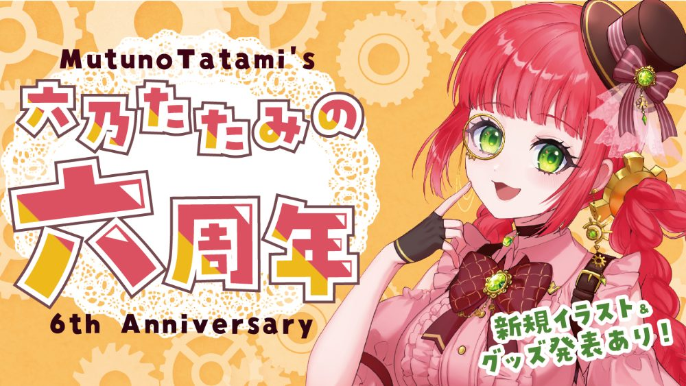
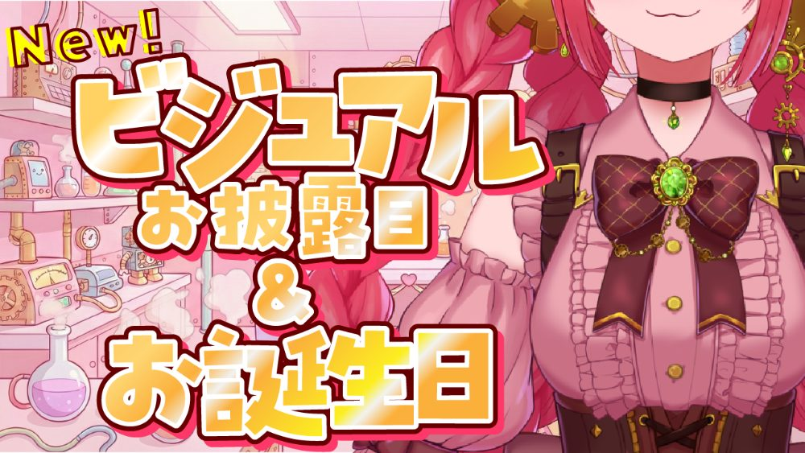
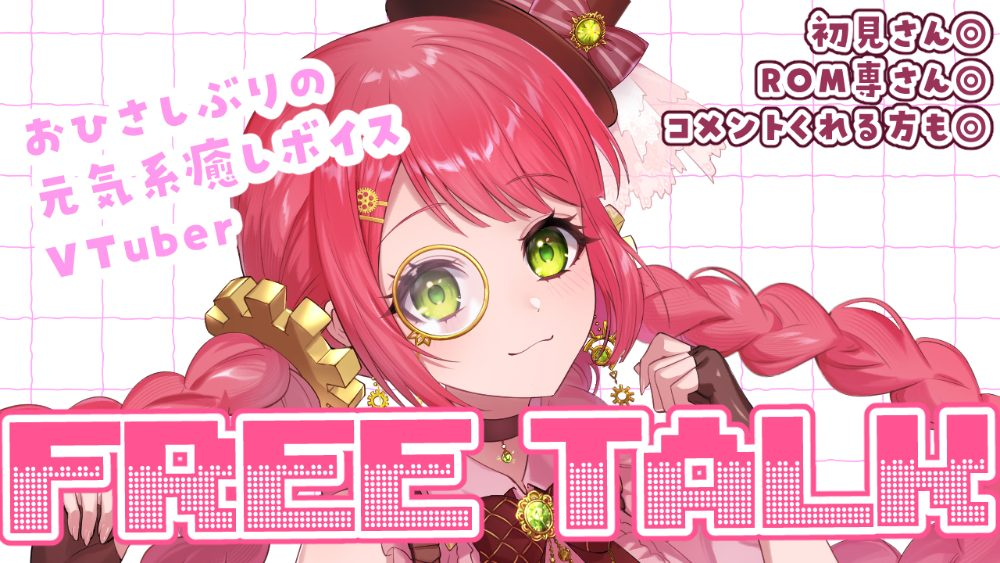
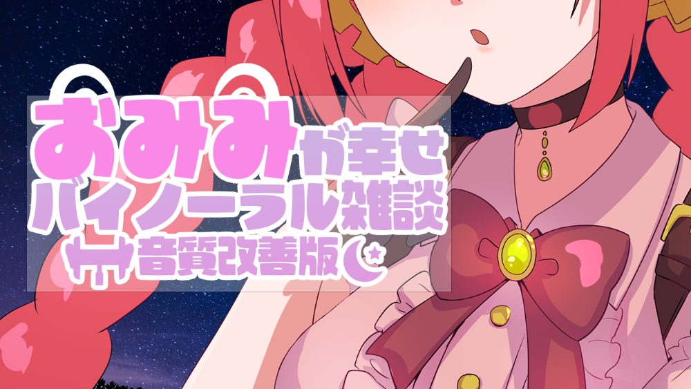
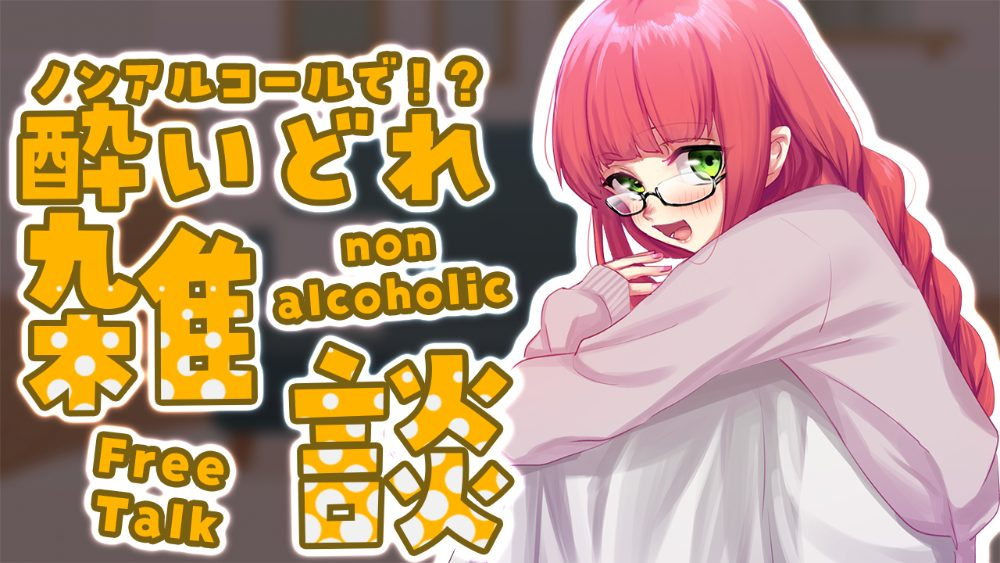

八田実紗希です。コードは未経験ですが、「何をどう見せれば伝わるか」を考え抜き、AIを動かしてVTuber公式サイトを3点、この一ヶ月で形にしました。
3サイトとも、狙いを立てて工夫を考え、この一ヶ月で公開まで仕上げました。
各サイトには、私が自分で考えて足した「＋α」があります。どうすればもっと好きになってもらえるかを考えた、いちばん私らしい工夫です。
深いグリーンで、クールで少しミステリアスな世界観に。尖ったキャラの“濃さ”を配色とあしらいで表現。
撫でる：やえちゃんの可愛さは、眺めるより触れて感じてほしい。タップで撫でられる仕掛けに回数カウントを添え、つい何度も手が伸びる、愛でる時間そのものを楽しめるようにしました。
語録ガチャ：尖った発言や独特な言い回しは、やえちゃんの大きな魅力。心に残るひと言をランダムに引ける仕掛けにして、その“らしさ”に来た人がすぐ出会えるようにしました。
爽やかな配色とレイアウトでキャラの魅力を整理。見せたい情報の優先順位を意識して構成。
漂わせる演出：立ち絵を見て「マスコットのヌノ〜は、漂わせたら可愛い」と直感。実際に浮かせて確かめ、手応えがあったのでマウスカーソルへの追従まで設計して採用しました。思いつきをすぐ形にして良し悪しを見極めるのが、私のやり方です。
世界観づくり：立ち絵と、落ち着いた可愛い声の話し方から世界観を想像し、やさしい夕暮れの色でまとめました。情報を並べるだけでなく、見ているだけで癒される空気感を大切にしています。
VTuber・六乃たたみとしての、私自身の公式サイト。配信スケジュール・各種リンク・Storeへの導線を集めた、活動の拠点です。
全振りの方針：VTuberの公式サイトであると同時に、私のWeb制作ポートフォリオでもあると意識。自分の売りを考え抜いた末、キャラの可愛さを伝えることに全振りしました。
世界観の演出：歯車が回るロード画面やふわふわ浮くミニキャラで世界観をつくり、「配信中かチェック！」ボタンで来た人がすぐ楽しめるように。初めて作ったサイトで、全体のバランスの取り方を多く学べました。
Illustratorでデザインをつくる楽しさに出会い、Webサイトで自分のアイデアが形になる面白さに惹かれてWEBデザイナーを志しました。
「Webサイトは情報を載せる場であり、訪れた人に体験を届ける場でもある」。VTuberの公式サイトづくりを通して、そう実感しています。今はVTuberが題材ですが、この「考えてつくる」姿勢は、企業やお店、サービスのサイトでも同じだと考えています。
コードは書けなくても、撫でられる仕掛けや漂うマスコットといった体験は、すべて自分で発想し、AIに的確に指示して実現しました。「こうしたい」を轷さず形にするのが、私の核です。
思いついたアイデアはすぐ試し、直しを重ねて最後まで作り切る。初めての制作でも、手を動かしながら学んで形にしてきました。学んだことを吸収して伸びるスピードには自信があります。
実際に手を動かして使っているツールと領域です。
企画・構成・デザイン・体験設計を担当。実装はAIにディレクションして進めます。
自分の配信用にサムネイルを制作。視聴者の目を引くタイポグラフィを軸にデザインしています（下にギャラリーを掲載）。
「どんな文字組みならキャラの魅力が伝わるか」を考え、タイポグラフィで目を引く構成を意識しています。

六周年記念

ビジュアルお披露目＆お誕生日

フリートーク

おみみが幸せ バイノーラル雑談

酔いどれ雑談
© 2026 八田実紗希 — Portfolio